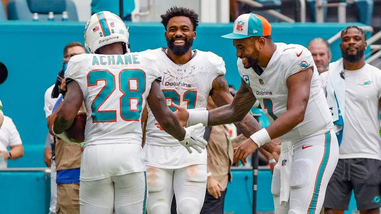
Damn, Dolphins.
Matchup of the Week
*️⃣ JA MONTG (1-2) vs. Sweet Brotha Numpsay (2-1) *️⃣
Tony had a bounce back week, looking solid. Pangy is 2-1 with no game decided by more than three points. Should be a banger !💥
Waiver Wire Wizard
🧙🏻♂️ It was a tough week out there. Like I said last week, after two week we knew who everyone was.
Let’s go with 8==D for the stash and save of Kylo Murray at $1. He hasn’t had an answer at QB, this is a nice gamble.
Cries for Help
😭 Love Heem again - Zilla was at $19 for Thielen, but paying $20 after drafting and dropping hurts badly.
Honorable Mention: Tua Williams One Kupp - $7 for a Bears player (Roschon Johnson)
Week Three Power Rankings
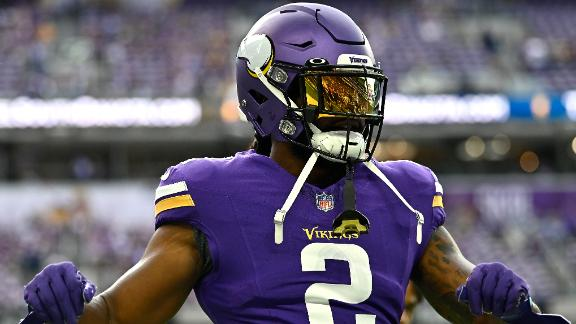
👑 Love Heem (2-1) ⬆️⬆️⬆️⬆️⬆️
Waiver Budget: $69
Let’s show this guy some love. Makes a genius move and gets criticized heavily. Now he’s got RB1 and QB1. 2-1 and with the biggest week (barely - some big scores out there. Let’s let KJT enjoy his time at the top!
Unsung Hero: Mattison - with Akers coming to town, he posts a solid week. And he’s showed up in Kris’s two wins.
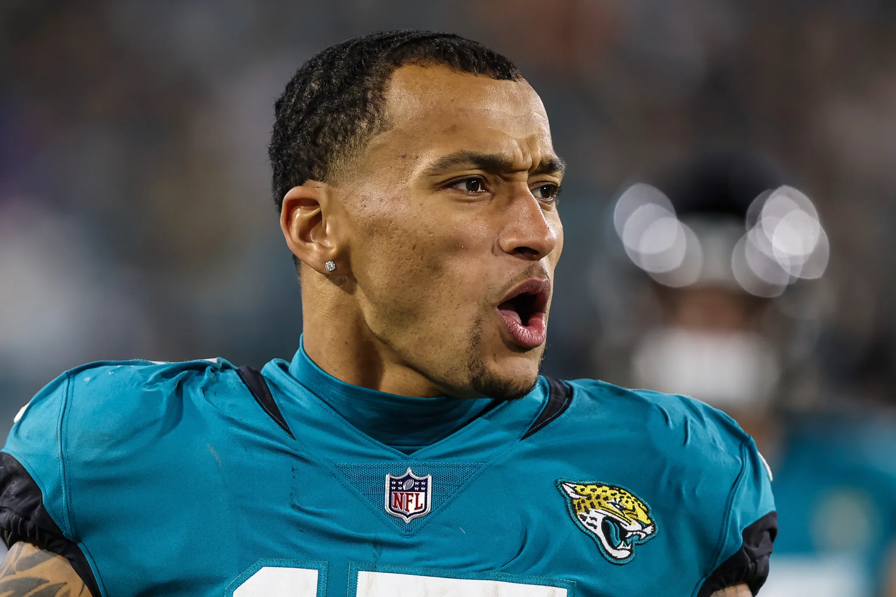
2. Exotic Engrams (2-1) 🔂
Waiver Budget: $62
Hanging on at the top mostly due to the big first week. My WR room is lookin extra sus with Jeudy and (Garrett) Wilson not finding any success so far, and Diontae on the IR.
Unsung Hero: Engram getting decent TE points each week.
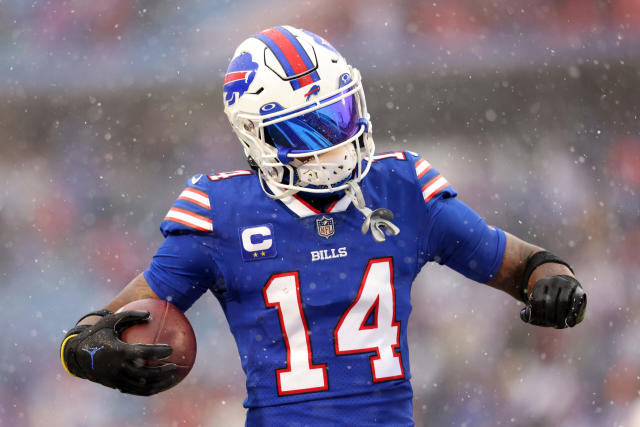
3. Diggin That Bijan Mustard (1-2) ⬆️
Waiver Budget: $78
Top in Points For and Points Against, CJ’s last two weeks have been great enough to keep him near the top ahead of other two win teams.
Unsung Hero: Diggs - Quiet but great first three weeks (for Stef). Sitting at WR9.
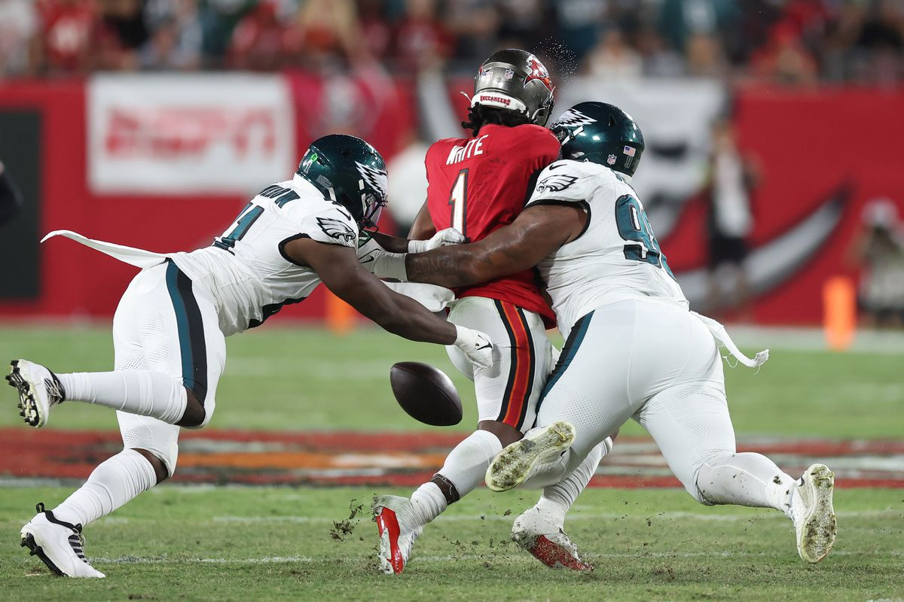
4. 8==D (2-1) ⬇️⬇️⬇️
Waiver Budget: $71
Keneth Walker has been fucking amazing, eating TDs for breakfast. RB2 has been difficult for Peej to figure out. WR health scares last week with Waddle and Aiyuk, but both guys seem g2g this week.
Unsung Hero: Eagles D - Normally I saw D don’t matter in a draft, but PJ drafted the birds and has rode them well, with 12, 8 and 16 point weeks so far, they look like a lineup lock to oppose the D-streamers.
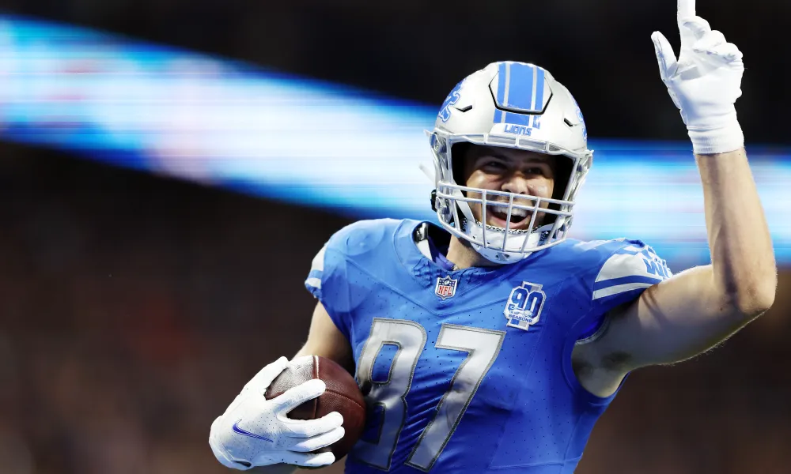
5. Tua Williams One Kupp (2-1) ⬆️⬆️⬆️
Waiver Budget: $37
Seif’s team looks like a mess, and he’s spent a ton. But some how he keeps getting it done.
Unsung Hero: LaPorta - It’s strange that the TE2 can fly under the radar, but he’s been great and is gaining Goff’s trust quickly.
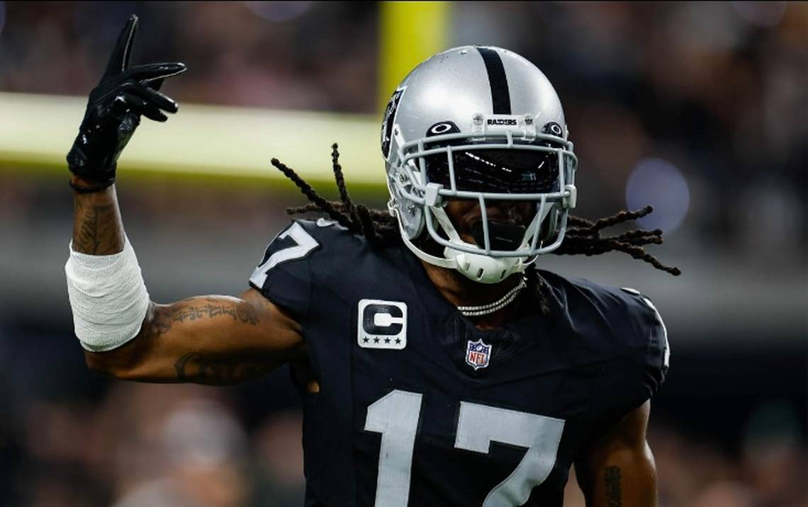
6. Sweet Brotha Numpsay (2-1) ⬆️⬆️⬆️
Waiver Budget: $36
Winning matters (despite low scores!)
I hate the Lions because Swift, and now Gibbs, however, I’m love seeing Swift thrive in Philly (his hometown). Let this man eat, and keep opening the largest gaps of all time - that line is serious.
Unsung Hero: Devante - Holy shit, I couldn’t watch much of the Steelers/Raiders game and did not Realize he had 42+ 😳 Unsung to me, at least.
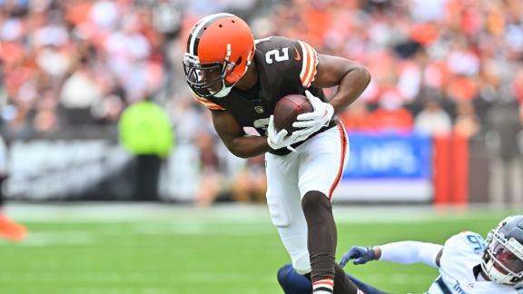
7. JA MONTG (1-2) ⬆️⬆️⬆️
Waiver Budget: $77
What a difference a name makes (Buttery Charbonnet -> JA MONTG)
Kelce is back. Tony’s team is a fuckin’ threat at 1-2.
Unsung Hero: Cooper - Just solid and boring. Could be even higher if the refs didn’t steal that long catch from him.
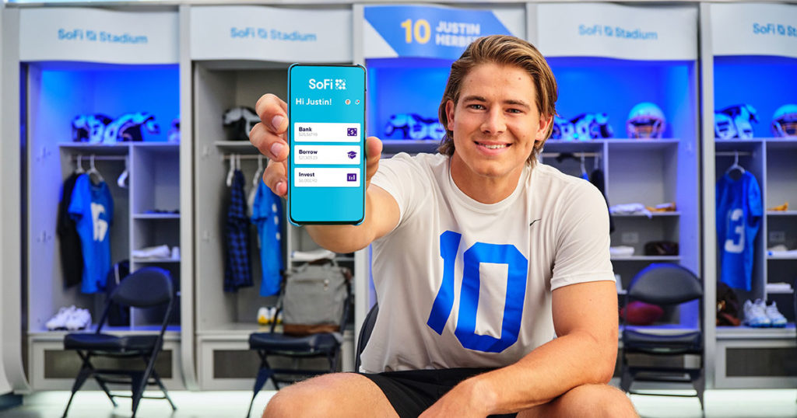
8. Jus-Kareemn-4-Herb (1-2) ⬇️⬇️⬇️
Waiver Budget: $25
Andy’s point totals have been pretty consistent, and he’s closer to the top of the league, but sits at 1-2. With the lowest FAAB in the league, expect trade offers from this man.
Unsung Hero: Herbie - The Chargers are fuckin Chargin, but not in a good way. That’s overshadowed Herbert’s QB2 start, so far. Will the Williams loss hurt him?
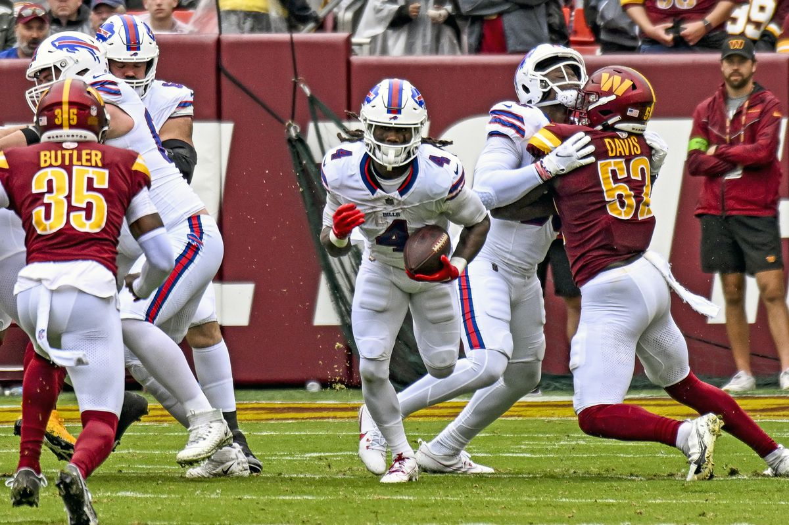
9. Hurts Donut (1-2) ⬇️⬇️⬇️⬇️⬇️⬇️
Waiver Budget: $62
It’s good to see Jalen Hurts not scoring a million TDs. I fucking hate that play. Can’t wait for it to be outlawed next year when it’s passed the “you’re just doing this because of them” stigma.
Unsung Hero: Cook - He’s been solid each week, though getting no looks inside the 20 (at least from what I’ve seen on Redzone).
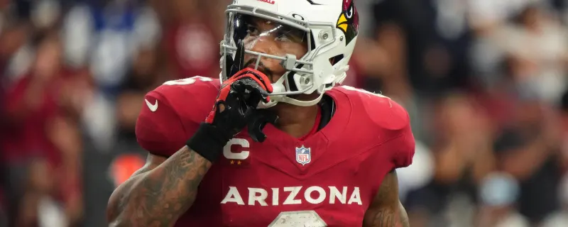
💩 Unpaid Bills (1-2) ⬇️⬇️⬇️
Waiver Budget: $79
The upside is that the Bills look great after three weeks.
Unsung Hero: Conner gonna Conner.
Good luck to everyone besides Andy! 🍬
“I would say that Travis Kelce has had a lot of big catches in his career. This would be the biggest.” - Bill Belichick
Sorry. I had to do it. - Jake Bowen